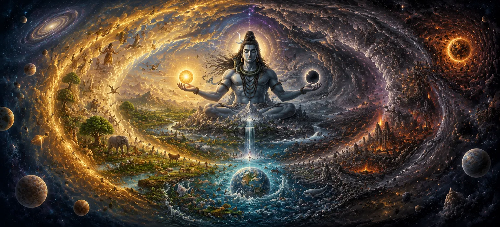

Having learned how Dharma was established within creation, the sages turned their attention to an even deeper mystery. They wished to understand whether creation existed forever in its present form or whether it passed through recurring cycles. If the universe had a beginning, would it also have an end? And if it ended, what would happen afterward? The sacred narration explains that creation is not a single event but part of an eternal cosmic rhythm. Worlds arise, flourish, and eventually dissolve, only to be created again according to the divine will of Lord Shiva. Through these endless cycles, the universe continuously renews itself while the Supreme Lord remains unchanged and eternal.
The Shiva Purana teaches that the universe functions through a divine cycle of creation, preservation, and dissolution. Just as day follows night and seasons continually change, the cosmos itself moves through vast periods of manifestation and withdrawal. Nothing within creation remains permanently fixed; all forms are subject to transformation according to divine law. These cycles are not signs of destruction alone but expressions of renewal and balance. Dissolution prepares the way for a new creation, while creation provides opportunities for souls to evolve through experience, Karma, and spiritual growth. Thus, the entire universe participates in a sacred process governed by the timeless wisdom of Lord Shiva.
The sages learned that the universe continually passes through three fundamental phases: creation, preservation, and dissolution. During creation, worlds and living beings emerge. During preservation, they exist and fulfill their purposes. During dissolution, all manifested forms gradually return to their subtle state. These three phases operate in perfect harmony and are essential to the balance of existence. Without creation there would be no life, without preservation there would be no growth, and without dissolution there could be no renewal. Together they form the eternal rhythm of the cosmos.
The Shiva Purana describes cosmic cycles that extend far beyond ordinary human understanding. Entire ages, worlds, and civilizations arise and disappear within these immense spans of time. What seems permanent from a human perspective is but a brief moment within the greater timeline of the universe. Through this teaching, the sages realized the insignificance of worldly pride and attachment. Compared to the vast cycles of creation, even the longest human life is only a fleeting instant.
At the end of a cosmic cycle comes Pralaya, the great dissolution. During this period, the manifested universe gradually withdraws into its original source. Worlds disappear, forms dissolve, and the distinctions that characterize creation cease to exist. However, Pralaya is not absolute annihilation. It is a temporary withdrawal of creation into a dormant state. Just as a seed contains the potential for future growth, the universe remains hidden within the divine power of Lord Shiva until the next cycle of creation begins.
Although worlds appear and disappear, Lord Shiva remains forever unchanged. He is not bound by the cycles of creation and dissolution because He is their ultimate source. Time, space, matter, and cosmic laws arise from Him and eventually return to Him. The sages understood that while all created things are temporary, the Supreme Lord is eternal. By meditating upon Him, one transcends fear of change and gains insight into the timeless reality that exists beyond all cosmic transformations.
While worlds and physical forms disappear during Pralaya, individual souls do not cease to exist. The Shiva Purana teaches that souls remain preserved within the divine order, carrying the impressions of their Karma from previous cycles. When a new creation begins, these souls once again receive opportunities to continue their spiritual journey. Thus, the cosmic cycle does not interrupt the soul's evolution but provides new circumstances through which growth and realization may occur.
After the period of dissolution comes a new beginning. By the will of Lord Shiva, creation emerges once more from its subtle state. Worlds reappear, life returns, and the cosmic drama resumes. Though the forms may differ, the eternal process continues without interruption. The sages learned that creation is not a single event confined to the distant past. It is an ongoing and recurring expression of divine power, revealing the infinite creativity of the Supreme Lord.
The cycles of creation and dissolution teach an important spiritual lesson: nothing material is permanent. Wealth, status, kingdoms, and even worlds eventually pass away. Understanding this truth helps devotees overcome attachment to temporary things and focus on what is eternal. The Shiva Purana encourages seekers to use their lives wisely, remembering that all worldly experiences are part of a larger divine process. True security lies not in external possessions but in devotion to the Supreme Lord.
The universe continually manifests.
All forms eventually return to their source.
Lord Shiva remains unchanged forever.
Upon hearing these teachings, the sages reflected deeply upon the nature of existence. They realized that behind the endless cycles of change stands an eternal reality beyond birth and death. Filled with reverence, they prepared to hear the next sacred teaching concerning the unfolding of creation.
The sages asked how these immense cycles could unfold with such precision. They were taught that Time itself serves as a divine instrument through which creation, preservation, and dissolution are regulated. Every age, every era, and every cosmic event unfolds according to the proper measure of time established by the Supreme Lord. Time governs the growth of worlds and also their decline. Yet even Time is not independent. It operates under the authority of Lord Shiva, who remains beyond past, present, and future.
The Shiva Purana compares the cosmic process to the breathing of the Divine. Creation emerges as though from an outward breath, while dissolution resembles an inward breath returning all things to their source. Just as breathing is natural and continuous, so too are the cycles of the universe. This imagery helped the sages understand that creation and dissolution are not opposing forces but complementary aspects of one eternal process governed by the Supreme Lord.
The sages learned that dissolution is not a punishment nor a failure of creation. It is a necessary phase that allows the universe to renew itself. Without dissolution, creation would become stagnant and unable to evolve into new forms. Pralaya clears away what has completed its purpose and prepares the foundation for a fresh cycle. In this way, dissolution becomes an act of transformation rather than destruction, revealing the wisdom behind the divine order.
After hearing the mystery of creation and dissolution, the sages were filled with awe. They understood that while worlds continually arise and disappear, the Supreme Lord remains unchanged. He alone stands beyond the cycles that govern the universe. With devotion and reverence, they praised Lord Shiva as the eternal witness of all creation. Their hearts became peaceful as they reflected upon His infinite power and prepared to hear about the sacred mountains and rivers that would soon emerge within the unfolding world.
"Worlds arise and worlds dissolve, ages begin and ages end, yet the Supreme Lord remains unchanged. He is the eternal source from whom creation emerges and into whom all things return."
The mystery of creation, preservation, and dissolution has now been revealed. Continue to the next chapter to discover the sacred mountains and holy rivers that emerged within creation and became revered centers of spiritual power and divine presence.